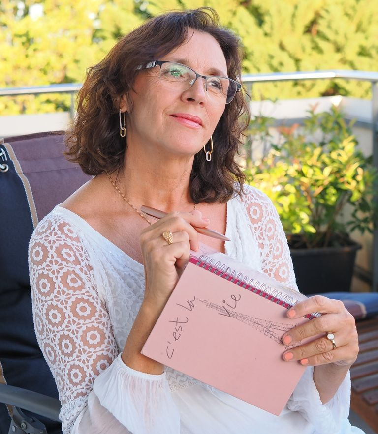

Hallo, ich bin Erika
Ich begleite Einzelpersonen, Paare und Familien dabei, wieder mit mehr Freude, Energie und Zuversicht durchs Leben zu gehen.

Deine Ressourcen wieder ins Fließen bringen
Als Sonderschulpädagogin, Familien- und Paar-Coachin, Mental-Trainerin, Autorin und Hochschul-Referentin unterstütze ich dich dabei, deine persönlichen Ressourcen voll auszuschöpfen – damit du dein (Familien-)Leben wieder mit mehr Freude, Energie, Selbstfürsorge und Zuversicht gestalten kannst.
Dein Kind begleite ich bei schulischen Herausforderungen – etwa bei Lern-, Konzentrations- oder Motivationsproblemen und LRSLese-Rechtschreib-Schwierigkeiten: anhaltende Probleme beim Lesen und Schreiben, die sich mit gezieltem Training gut verbessern lassen..
Über viele Jahre in der pädagogischen Arbeit habe ich erlebt, wie viel sich verändert, wenn Menschen sich wirklich gesehen und verstanden fühlen. Genau da setzt mein Coaching an.
Wie ich mit dir arbeite
Vier Grundsätze prägen jede Begleitung – unabhängig davon, ob du allein, als Paar oder als Familie zu mir kommst.
Auf Augenhöhe
Ich begegne dir wertschätzend und wertfrei. Du bist Expertin bzw. Experte für dein Leben – ich bringe Werkzeuge und einen klaren Blick von außen mit.
Ressourcenorientiert
Wir bauen auf dem auf, was in deinem Leben bereits gut gelingt. Aus deinen Stärken entsteht die Kraft für Veränderung – nicht aus dem Fokus auf Defizite.
Ganzheitlich
Ich verbinde erprobte Methoden aus Psychologie, Kommunikation und Pädagogik – individuell auf deine Situation abgestimmt, nie nach Schema F.
Mit Herz & Humor
Veränderung darf sich leicht anfühlen. Ein empathischer, humorvoller Zugang schafft Vertrauen – und erleichtert so den Zugang zu schwierigen Themen.
Von der Pädagogik zum Coaching
Theaterpädagogin
Workshops mit Kindern mit dem Ziel, ein von mir geschriebenes Theaterstück auf die Bühne zu bringen.
Sonderschulpädagogin
Jahrelange Arbeit mit Schüler*innen und Familien – hier wurde mein Blick für individuelle Stärken und für das, was Menschen wirklich brauchen, geschärft.
LRSLese-Rechtschreib-Schwierigkeiten: anhaltende Probleme beim Lesen und Schreiben, die sich mit gezieltem Training gut verbessern lassen.- & Lerntrainerin
Weiterbildung, um Kinder gezielt bei Lese-, Rechtschreib- und Konzentrationsthemen sowie bei Schulängsten zu begleiten.
Familien- & Paar-Coachin, Mental-Trainerin
Ausbildungen in Positiver PsychologieEin Zweig der Psychologie, der erforscht, was Menschen stärkt: Stärken, Ressourcen, Sinn und gelingende Beziehungen., Gewaltfreier KommunikationGewaltfreie Kommunikation nach Marshall Rosenberg: Beobachtungen, Gefühle, Bedürfnisse und Bitten klar aussprechen, ohne Vorwurf., Mentaltraining und systemischer ArbeitEin Ansatz, der dich in deinen Beziehungen sieht, etwa in Familie und Partnerschaft, statt nur das einzelne Problem. – die Basis meines heutigen Coachings.
Autorin & Referentin
Als Autorin und Hochschul-Referentin gebe ich mein Wissen weiter – 2022 auch auf der Bühne des Speaker Slam.
SPIRIT-Programm & Onlinekurs KISMET
Aus all diesen Erfahrungen ist mein eigenes SPIRIT-ProgrammMein Programm mit sechs Entwicklungswegen: Selbstbestimmung, Persönlichkeitsentwicklung, Inspiration, Resilienz, Intuition und Transformation. entstanden – sowie der Selbstlernkurs KISMETMein Onlinekurs: 4 Module, 125 Lektionen, 120 Videos und ein 57-seitiges Reflexionsbuch. Auf Wunsch begleite ich dich dabei persönlich im Coaching. für Veränderung im eigenen Tempo.
Hilfe zur Selbsthilfe
Mein Coaching ist eine „Hilfe zur Selbsthilfe“ und ersetzt keine medizinische oder psychologische Therapie. Wenn eine Therapie sinnvoller ist, sage ich dir das offen und verweise dich gerne weiter.
Lernen wir uns kennen
In einem kostenlosen KlarheitsgesprächEin kostenloses, unverbindliches Erstgespräch: Wir lernen uns kennen und klären, ob und wie ich dich unterstützen kann. spüren wir gemeinsam, ob die Chemie stimmt und wie ich dich am besten begleiten kann.